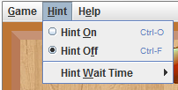
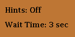
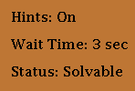
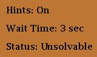
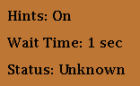
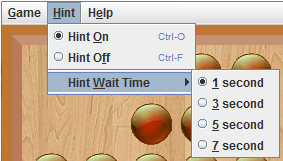

Hints
Turning Hints On/Off
To turn on hints for the game, click Hint -> Hint On in the menu bar. The short key is Ctrl-O. To turn off hints for the game, click Hint -> Hint Off. The short key is Ctrl-F.

The hint menu
The side panel to the right of the board also displays whether or not the hints are on.

Hints are off
Status (Hint Messages)
When hints are on, the status of the game will appear in the side panel. The status displays hint messages about the current game.
If the status is Solvable, the current board can be solved down to one peg.

The current board is Solvable
If the status is Unsolvable, the current board cannot be solved down to one peg.

The current board is Unsolvable
If the status is Unknown, this means that the application was unable to determine whether or not the current board is solvable within the given waiting time. The Wait Time on the side panel indicates the time that the program will spend searching for a solution before the solution is shown as unknown.

The status is Unknown
Once the game is over (no more possible moves or is animating the solution), the status will display “Game Over.”
Wait Time
To change how long it takes before the hints display a status as unknown, a player can change the wait time. To change the wait time, click Hint -> Hint Wait Time in the menu bar and select the time.

The Hint Wait Time sub menu
While the program is waiting to display the hint message/status, the status displays “Waiting…” In addition, while the program is waiting and searching for whether or not a solution is possible, the game becomes disabled; a player cannot make any moves or click any buttons while the program is waiting.